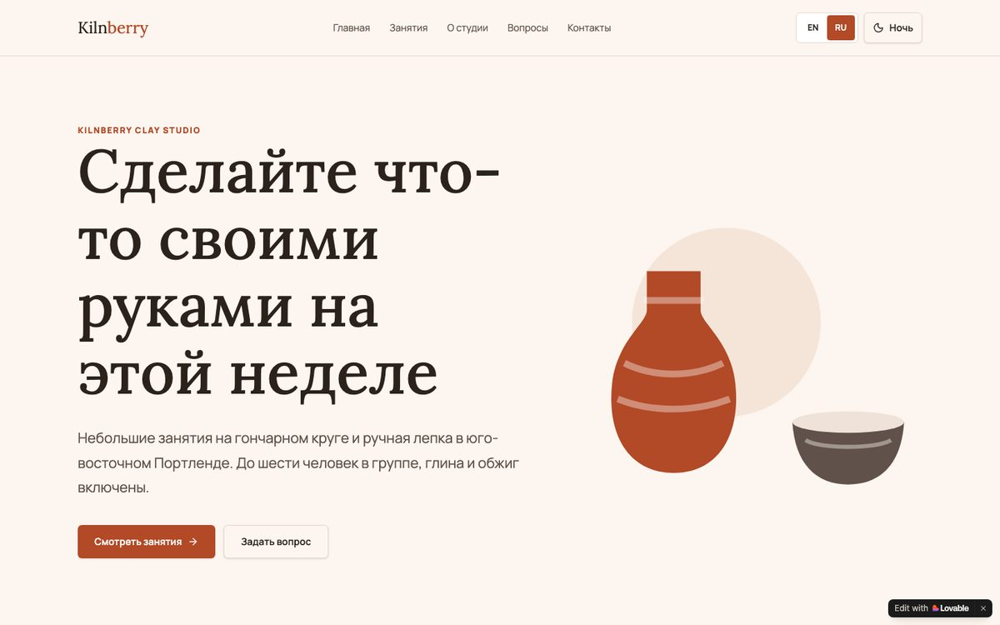
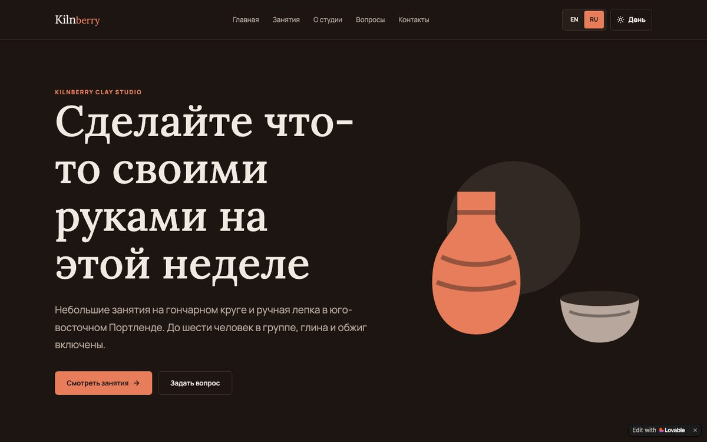
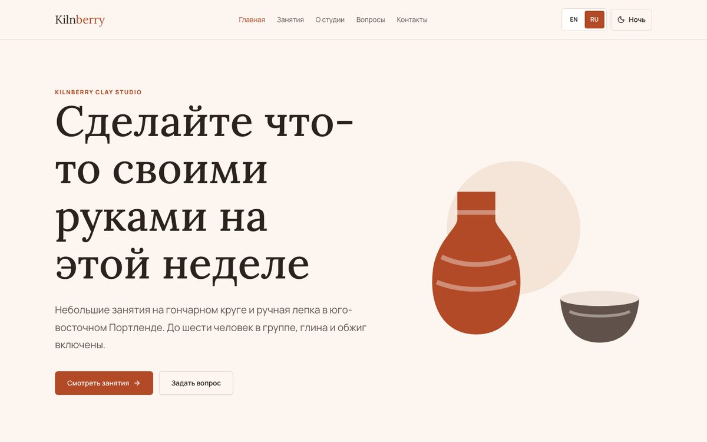
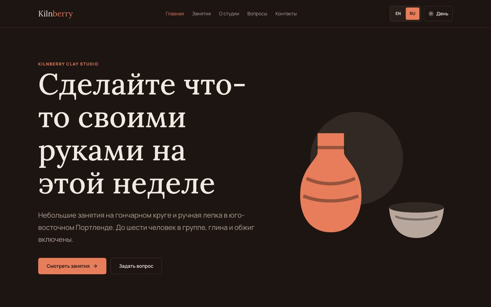
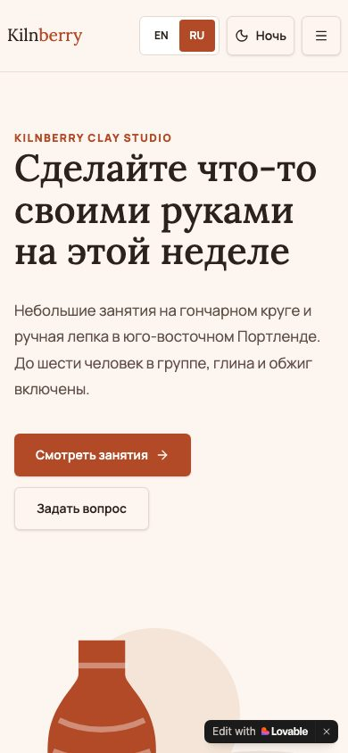
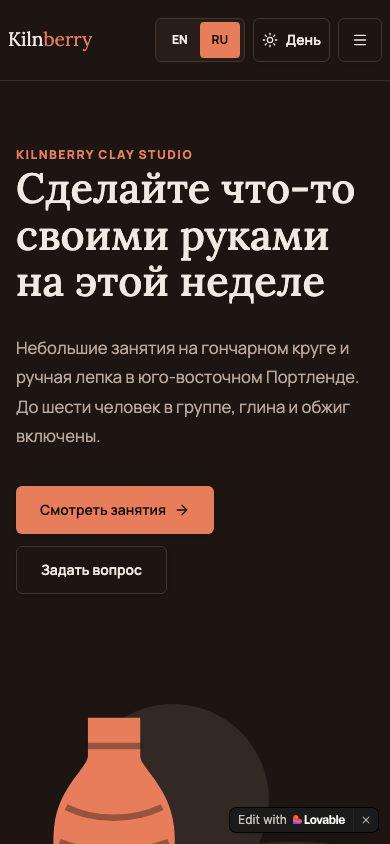
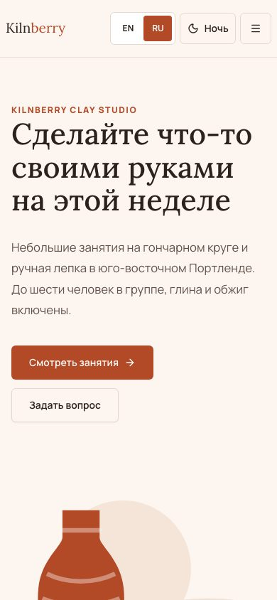
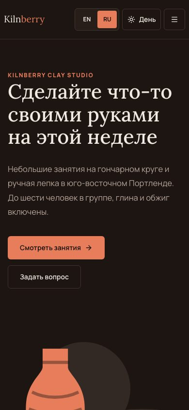

Демо · из Lovable в WordPress
Сайт из Lovable переехал на WordPress, дизайн тот же
Мы сделали в Lovable сайт из пяти страниц для вымышленной гончарной студии, а потом перенесли его на WordPress своей темой. Страницы собраны из блоков редактора, два языка, дневная и ночная тема. Владелец меняет тексты сам, в редакторе и без кода.
Работает в вашем браузере, открывается за 10–30 секунд
Студию Kilnberry Clay Studio мы придумали для этого демо. Живой WordPress — песочница в вашем браузере: вы входите как администратор, изменения пропадают при закрытии вкладки, письма не отправляются.
До и после
Главная страница, первый экран. Переключатель темы вверху меняет и эти картинки.








Правка текста без кода
Запись экрана в живом WordPress, 35 секунд: открыть страницу в редакторе, поменять заголовок, сохранить. На сайте сразу новый текст.
Что перенесено
- Страницы и вид на телефоне
5 страниц на двух языках повторяют дизайн и на компьютере, и на телефоне.
- Тексты, меню и форма
Все тексты слово в слово, своё меню для каждого языка, форма с теми же полями и подсказками об ошибках.
- Заголовки и описания
У каждой страницы заголовок вкладки и описание для поиска остались прежними.
- Переадресация со старых адресов
Старые ссылки Lovable с ?lang=ru открывают ту же страницу по-русски, уже по новому адресу.
- Владелец правит сам
Страницы собраны из стандартных блоков WordPress. Занятия и цены правятся в отдельном списке.
- Тестовая копия до запуска
Живой WordPress выше и есть такая копия: та же тема и содержимое, ещё до настоящего хостинга.
Заголовки и адреса
| Страница | Адрес до (Lovable) | Адрес после (WordPress) | Заголовок, без изменений |
|---|---|---|---|
| Главная | /?lang=ru | /ru/ | Kilnberry Clay Studio | Занятия гончарным делом в Портленде |
| Занятия | /classes?lang=ru | /ru/zanyatiya/ | Занятия и цены | Kilnberry |
| О студии | /about?lang=ru | /ru/o-studii/ | О студии | Kilnberry |
| Вопросы | /faq?lang=ru | /ru/voprosy/ | Вопросы и ответы | Kilnberry |
| Контакты | /contact?lang=ru | /ru/kontakty/ | Контакты | Kilnberry |
Переадресация
В Lovable у страницы один адрес, а язык менялся через ?lang=ru. В WordPress у русских страниц свои адреса, поэтому старые ссылки переадресуются:
| Старая ссылка | Что открывается |
|---|---|
/?lang=ru | /ru/ |
/classes?lang=ru | /ru/zanyatiya/ |
/about?lang=ru | /ru/o-studii/ |
/faq?lang=ru | /ru/voprosy/ |
/contact?lang=ru | /ru/kontakty/ |
/classes?lang=en | /classes/ |
Как проверяли
- 41 вид страницы сравнили с сайтом Lovable: 5 страниц × 2 языка × день и ночь × компьютер и телефон, плюс страница 404. Тексты, заголовки и описания совпадают слово в слово, кроме отличий, перечисленных ниже.
- 174 блока на 10 страницах открываются в редакторе WordPress без единой ошибки блока.
- Форму отправили по-английски и по-русски: оба сообщения лежат в админке, в разделе Messages. Пустые поля показывают ошибку рядом с полем.
- Проверили 6 старых ссылок из таблицы выше: каждая открывает нужную страницу на нужном языке.
- На ширине 390 px нет горизонтальной прокрутки, в консоли браузера нет ошибок (кроме положенного кода 404 на странице 404).
Что отличается нарочно
- В Lovable форма только показывала «спасибо». В WordPress каждое сообщение сохраняется в админке и уходит на почту.
- Ссылка «Перейти к содержанию» для тех, кто пользуется клавиатурой, и скрытое поле от спама в форме.
- У страницы 404 свой заголовок: «Страница не найдена».
Сайт в Lovable, Bolt или v0?
Перенесём на WordPress с тем же дизайном и настроим так, чтобы вы правили его сами.